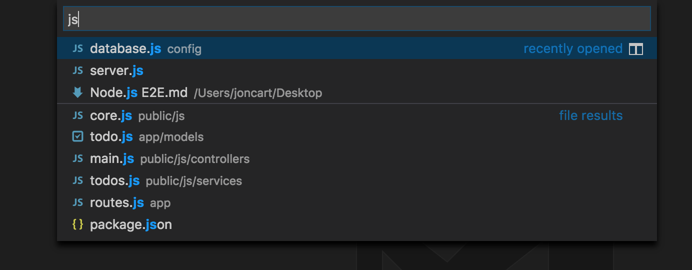
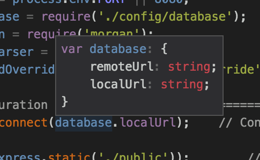
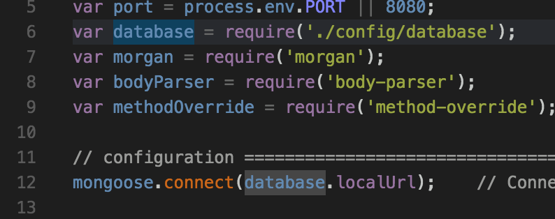
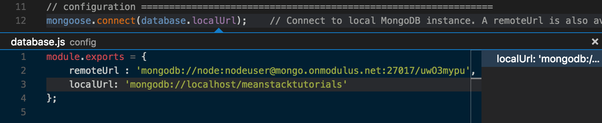
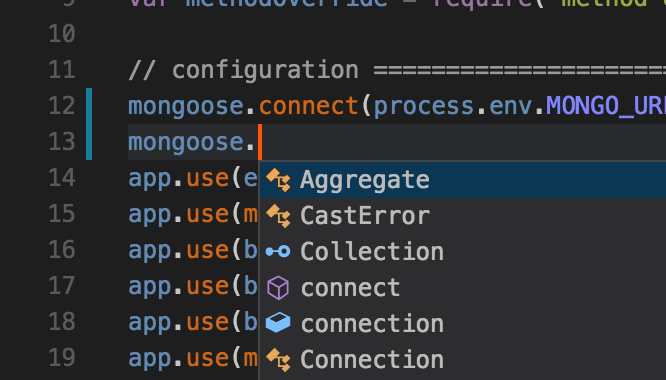
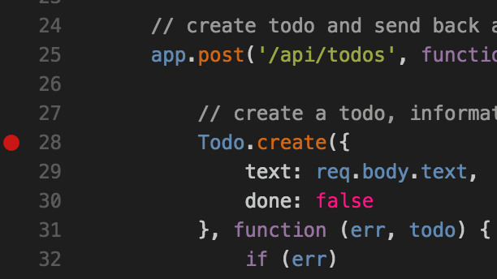
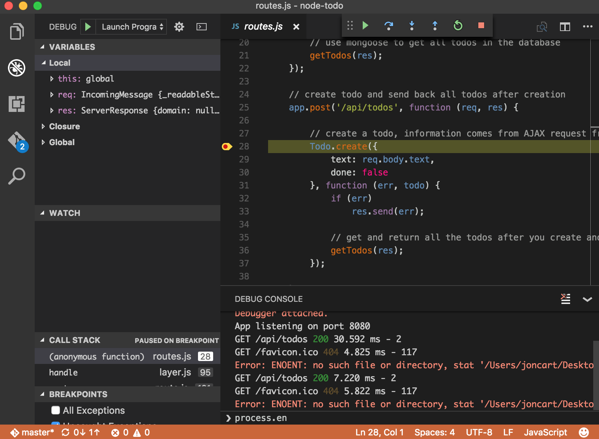
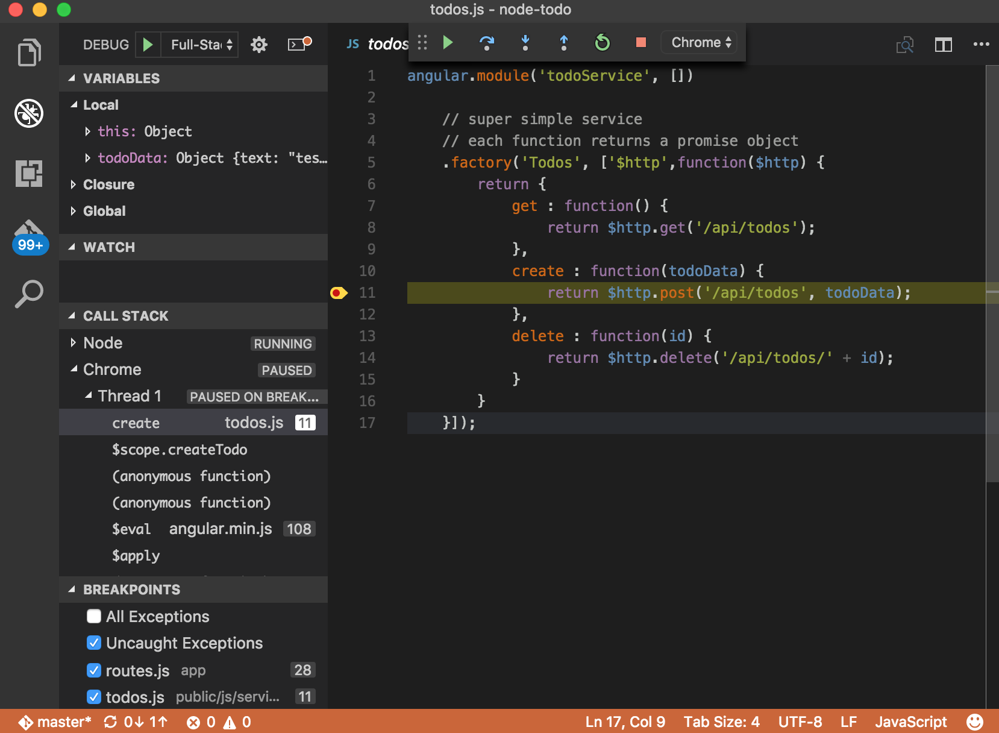
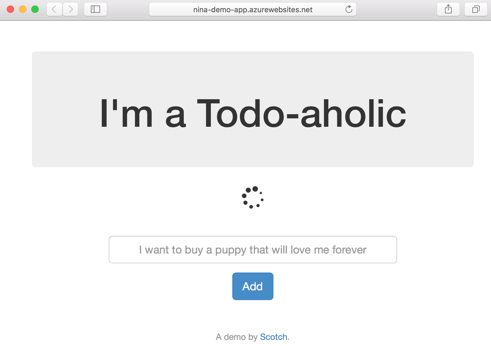
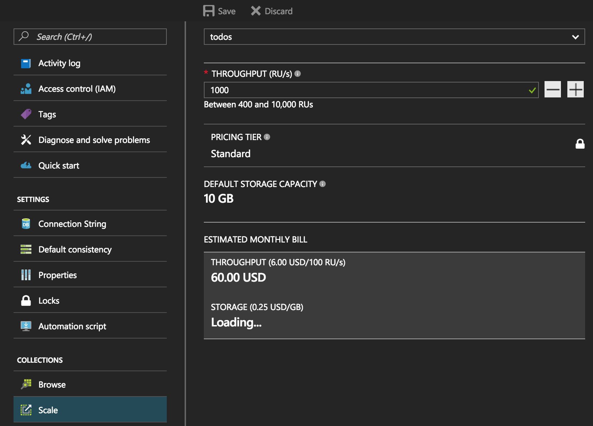

Node.js Development with Visual Studio Code and Azure
January, 4 2017 - Jonathan Carter, @lostintangent
Between Visual Studio Code and Azure, we're trying to contribute to simplifying and improving the overall developer experience of building, debugging and deploying Node.js applications. At Node Interactive North America 2016, I was excited to be able to demo some of the work we've been doing recently based on community feedback, and this article tries to capture that workflow for folks who are interested in trying it out and/or are looking for a little more detail than I was able to cover in my talk.
The demo makes use of a simple todo app created by and published by Scotch.io. It is a single-page MEAN application, and therefore, uses MongoDB as its database, Node/Express for the REST API/web server and Angular.js 1.x for the front-end UI. Use the following ToC to jump to particular sections of interest, otherwise, continue reading ahead.
- Prerequisites
- Project Setup
- Integrated Terminal
- Integrated Git version control
- Project / Code navigation
- Auto-completion
- Running The App
- Integrated Debugging
- Full Stack Debugging
- Dockerizing Your App
- Deploying Your App
- Using DocumentDB
- Clean-up
- Conclusion
Prerequisites
In order to effectively run through this demo, you'll need to have the following software installed:
-
Visual Studio Code Insiders build, which you can download here. You don't technically need the Insiders build, however, I would encourage everyone to use it since it provides access to the latest bug fixes/feature enhancements (just like Chrome Canary builds), and is the same build that the VS Code team uses.
-
Docker, which can be downloaded here. Additionally, you will need to have a DockerHub account in order to publish the Docker images that will be created in the walkthrough.
-
Azure CLI (>=
v0.1.0b11), which provides installation instructions here. Additionally, you will need an Azure account, and be logged in with the Azure CLI by runningaz loginand following the interactive login. -
Yarn, which provides installation instructions here. This isn't technically required, however, it's used in place of the NPM client below. I'd recommend it!
Additionally, since the demo app uses MongoDB, you need to have a locally running MongoDB instance, which is listening on the standard 27017 port. The simplest way to achieve this is by running the following command after Docker is installed: docker run -it -p 27017:27017 mongo.
Project Setup
To get started, we need to grab the todo sample project so we can start playing around with it. To do this, perform the following steps:
-
Open up Visual Studio Code, and type
F1to bring up the Command Palette (or alternatively, selectCommand Palette...from theViewmenu). -
Type
gitclto find theGit: Clonecommand and hitENTER.
Note: The VS Code Command Palette supports "fuzzy search", which allows you to type fewer keystrokes to find commonly used commands.
-
Enter
https://github.com/scotch-io/node-todointo the prompt and hitENTER. -
Select the folder you'd like to clone the project into, or create a new one (e.g. called
Todos). At this point, VS Code will clone the repo, and launch a new workspace that is rooted at the newly cloned project.
Alternatively, you could use the Git CLI to clone the sample repo, however, this exercise helps illustrate some of the productivity enhancers that VS Code provides by means of the command palette. I'd encourage you to hit F1 and browse the various commands it (and any installed extensions) provides, in order to identify what else you can do.
Integrated Terminal
Since this is a Node.js project, the first thing we need to do is ensure that all of its dependencies are installed from NPM, since they weren't checked into the Git repo. You can perform this step from within your standard terminal (I would recommend Hyper!), or, if you prefer, you can also bring up the VS Code integrated terminal by pressing CTRL+` and then running either npm install or yarn, depending on which NPM client you prefer. I like Yarn since it's very fast and provides some great workflow improvements, so I'd recommend checking it out if you haven't already.
Since VS Code wants to fit naturally into your existing workflow, it's up to you to decide if and when the integrated terminal is useful. I find that if I'm running VS Code full-screen (especially with the new Zen mode!), it's nice to be able to use the integrated terminal for simple/one-off commands. Whereas if I'm doing something more "sophisticated", I'll just switch to a full-screen version of Hyper. Choice and flexibility is key here.
Integrated Git version control
Installing the app's dependencies via Yarn resulted in a yarn.lock file being generated, which provides a predictable way to re-acquire the exact same dependencies in the future, without any surprises in either CI builds, production deployments or other developer's machines.
It is encouraged that this file be checked into source control, and to do this, you can easily switch to the integrated Git tab in VS Code (the one with the Git logo), and notice the newly added file. You can type in a commit message, and type CMD+Enter (or click the checkmark icon) in order to stage/commit the change locally.
Behind the scenes, this is simply automating the same Git CLI commands you would have run manually, so once again, it's up to you to decide whether the integration in VS Code works for you or not. If you're curious, you can bring up the Git output window by clicking the ... menu item and selecting Show Git Output. This will display all of the underlying Git activity that VS Code is performing on your behalf.
Project / Code navigation
In order to familiarize ourselves within the codebase, let's play around with some examples of some of the navigation capabilities that VS Code provides:
-
Type
CMD+Pand enter.js, which lets you see all of the JavaScript/JSON files in the project, along with the directory they're within. Once again, this dialog supports the same "fuzzy search" as the command palette, so it's pretty flexible.
-
Select
server.js, which is the startup script for the app. -
Hover over the
databasevariable that is imported on line 6 in order to see its "type". This ability to quickly inspect variables/modules/types within a file can come in very handy, especially since we tend to spend more time reading/understanding code than writing it!
-
Simply placing your cursor within the span of the name
database, allows you to quickly see all other references to it within the same file, and right-clicking and selecting Peek References allows you to see uses of it project wide. -
Beyond quickly inspecting variable types on hover, you can also inspect the definition of a variable, even if it's in another file! For example, right-click on
database.localUrlon line 12, and selectPeek Definition, which lets us quickly see how the app is configured to connect to MongoDB by default.
Cloud-native, twelve-factor apps don't hardcode configuration like this, and therefore, it would be better to set our MongoDB connection string via an environment variable, which can easily be changed per deployment/environment. Let's make that change!
Auto-completion
Auto-completion can provide huge productivity enhancements when writing/exploring code, since it prevents you from needing to keep referencing documentation or worrying about API typos. For example, let's augment the hardcoded MongoDB connection string with an environment variable by changing line 12 from this:
mongoose.connect(database.localUrl);
To this:
mongoose.connect(process.env.MONGO_URL || database.localUrl);
When typing process., you should have noticed that VS Code displayed the available members of the Node.js process global API, without you needing to configure anything.
This works because VS Code uses TypeScript behind the scenes (even for JavaScript!) to provide type information, which can then be used to inform the completion list as you type. VS Code is able to detect that this is a Node.js project, and as a result, automatically downloaded the TypeScript typings file for Node.js from NPM. This allows you to get completion for other Node.js globals such as Buffer or setTimeout, as well as all of the built-in modules such as fs and http.
In addition to the built-in Node.js APIs, this auto-acquisition of typings also works for over 2,000 3rd party libraries, such as React, Underscore and Express. For example, in order to disable Mongoose from crashing the sample app if it can't connect to the configured MongoDB database instance, add the following line of code to line 13:
mongoose.connection.on('error', () => {
console.log('DB connection error');
});
When typing that, you'll notice that you get completion, once again, without needing to do anything.
You can see which libraries support this auto-complete capability by browsing the amazing DefinitelyTyped project, which is the community-driven source of all TypeScript type definitions.
Running The App
Now that we've explored and tweaked this app a bit, now is time to run it. To do this, simply hit F5 to run the app. Because this is the first time we've ever tried to run it, we're asked to specify the type of "run configuration" we want to use:
Select Node.js v6.3+ (Experimental), which will use the new Chrome Debugging Protocol support that was recently added to Node.js. Doing this generates a new file in your project called launch.json, which simply tells VS Code how to launch and/or attach to your app in order to debug it.
Notice that it was able to detect that the app's startup script is server.js, and once again, we don't need to change anything in order to make debugging just work.
At this point, hit F5 again to run the app. This will launch the app, along with the Debug Console window in VS Code, which displays stdout for our newly running app.
Additionally, this console is actually attached to our newly running app, so you can type JavaScript expressions, which will be evaluated in the app, and also includes auto-completion! For example, try typing process.env in the console to see what I mean.
If you open a browser, you can navigate to http://localhost:8080 and see the running app. Type a message into the textbox and add/remove a few todos to get a feel for how the app works.
Debugging
In addition to being able to run the app and interact with it via the integrated console, VS Code also provides the ability to set breakpoints directly within your code. For example, hit CTRL+P to bring up the file picker, type route and select the route.js file.
Let's set a breakpoint on line 28, which represents the Express route that will be called when our app tries to add a todo. To set a breakpoint, simply click the gutter to the left of the line number within the editor:
Note: In addition to standard breakpoints, VS Code also supports conditional breakpoints, which allow you to customize when the app should suspend execution. To use them, simply right-click the gutter, select Add Conditional Breakpoint..., and specify either the JavaScript expression (e.g. foo = "bar") or hit count that you'd like to condition the breakpoint on.
With that set, go back to the running app and add a todo. This immediately causes the app to suspend execution, and VS Code will pause on line 28 where we set the breakpoint:
Within the paused file, we can hover over expressions to view their current value, inspect the locals/watches and call stack, and use the debug toolbar at the top to step through the execution. All the things you would expect from an IDE, but in a lightweight text editor. Hit F5 again to continue execution of the app.
Full Stack Debugging
As mentioned, this is a MEAN app, which means its front-end and back-end are both written using JavaScript. So while we're currently debugging our back-end Node/Express code, at some point, we may need to debug our front-end/Angular code. Fortunately, VS Code has a huge ecosystem of extensions, which are easy to install, including integrated Chrome debugging.
To demonstrate this, switch to the extensions tab and type chrome into the search box:
Select the extension named Debugger for Chrome and click the Install button. After doing this, you'll need to reload VS Code to activate the extension. It will persist your workspace across the restart so don't worry about losing any state.
Type CTRL+P, enter/select launch.json and replace the contents of that file with the following:
{
"version": "0.2.0",
"compounds": [
{
"name": "Full-Stack",
"configurations": ["Node", "Chrome"]
}
],
"configurations": [
{
"name": "Chrome",
"type": "chrome",
"request": "launch",
"url": "http://localhost:8080",
"port": 9222,
"userDataDir": "${workspaceFolder}/.vscode/chrome",
"webRoot": "${workspaceFolder}/public"
},
{
"name": "Node",
"type": "node2",
"request": "launch",
"program": "${workspaceFolder}/server.js",
"cwd": "${workspaceFolder}"
}
]
}
This change does two things:
-
Adds a new run configuration for Chrome, which will allow us to debug our front-end JavaScript code. You can hover your mouse over any of the settings that are specified to view documentation about what they do. Nice!
-
Adds a "compound" run configuration, which will allow us to debug our front and back-end code at the same time! The compound configuration concept is really powerful, as we'll discuss later!
To see this in action, switch to the debug tab in VS Code, and change the selected configuration to "Full-Stack" (which is what we called the compound config, you can name it anything you want), and then hit F5 to run it.
This launches the Node.js app (as can be seen in the debug console output), as well as Chrome, which is configured to navigate to the Node.js app at http://localhost:8080.
Type CTRL+P and enter/select todos.js, which is the main Angular controller for the app's front-end. Set a breakpoint on line 11, which is the entry-point for a new todo being created.
Go back to the running app, add a new todo, and you'll notice that VS Code has now suspended execution within the Angular code:
Just like with the Node.js debugging, you can hover over expressions, view locals/watches, evaluate expressions in the console, etc. However, there are two cools things to consider now:
-
The
Call Stackpane displays two different stacks:NodeandChrome, and indicates which one is currently paused. -
You can step between front and back-end code! To test this, simply hit
F5, which will run execution and hit the breakpoint we previously set in our Express route.
With this setup, we can now efficiently debug front, back or full-stack JavaScript code directly within VS Code. Going further, the compound debugger concept isn't limited to just two target processes, and also isn't just limited to JavaScript, so if you're working on a micro-service app, that is potentially polyglot, you can use the exact same workflow we did above, once you've installed the necessary extensions (e.g. Go, Ruby, PHP).
Dockerizing Your App
Speaking of microservices, let's take a look at the experience that VS Code provides for developing with Docker. Many Node.js developers are using Docker for providing portable app deployments for both development, CI and production environments. That said, we've heard lots of feedback that while the benefits of Docker are extremely high, the learning curve and cost of getting started can also be fairly high. VS Code provides an extension that tries to help simplify some of that onboarding!
Switch back to the extensions tab, search for docker and select the Microsoft Docker extension. Install it and then reload VS Code, just like we did for the Chrome extension above.
This extension includes many things, one of which is a simple command for generating a Dockerfile and docker-compose.yml file for an existing project. To see this in action, type F1 (to bring up the command palette) and type docker to display all of the commands that the Docker extension provides:
Select the Docker: Add docker files to workspace command, select Node.js as the app platform, and specify that the app exposes port 8080. This generates a complete Dockerfile and Docker compose files that you can begin using immediately.
The Docker extension also provides auto-completion for your Dockerfiles and docker-compose.yml files, which makes authoring your Docker assets a lot simpler. For example, open up the Dockerfile and change line 2 from:
FROM node:latest
To:
FROM mhart
With your cursor after the t in mhart, hit CTRL+Space to view all of the image repositories that mhart has published on DockerHub.
Select mhart/alpine-node, which a very efficient and small Linux distro and provides everything that this app needs, without any additional bloat (Alpine Linux is great for Docker!). Smaller images are typically better since you want your app builds and deployments to be as fast as possible, which makes distribution/scaling/etc. quick.
Now that we have our Dockerfile, we need to build the actual Docker image. Once again, we can use a command that the Docker extension installed, by typing F1 and entering dockerb (using "fuzzy search"). Select the Docker: Build Image command, choose the /Dockerfile that we just generated/edited, and then give a tag to the image which includes your DockerHub username (e.g. lostintangent/node). Hit <ENTER>, which will launch the integrated terminal window and display the output of your Docker image being built.
Notice that the command simply automated the process of running docker build for you, which is another example of a productivity enhancer that you can either choose to use, or you can just use the Docker CLI directly. Whatever works best for you!
At this point, to make this image easily acquirable for deployments, we just need to push it to DockerHub. To do this, bring up the command palette, enter dockerpush and select the Docker: Push command. Select the image tag that you just build (e.g. lostintangent/node) and hit <ENTER>. This will automate calling docker push and will display the output in the integrated terminal.
Deploying Your App
Now that we have our app Dockerized and pushed to DockerHub, we need to actually deploy it to the cloud so we can show it off to the world. For this, we'll use Azure App Service, which is Azure's PaaS offering, and recently added two new capabilities which are relevant to Node.js developers:
-
Support for Linux-based VMs, which reduces incompatibilities for apps which are built using native Node modules, or other tools which might not support Windows and/or may behave differently.
-
Support for Docker-based deployments, which allow you to simply specify the name of your Docker image, and allow App Service to pull, deploy and scale the image automatically.
To get started, open up your terminal, and we'll use the new Azure CLI 2.0 to manage your Azure account and provision the necessary infrastructure to run the todo app. Once you've logged into your account from the CLI using the az login command (as mentioned in the pre-reqs), perform the following steps in order to provision the App Service instance and deploy the todo app container:
-
Create a resource group, which you can think of as a "namespace" or "directory" for helping to organize Azure resources. The
-nflag is the name of the group and can be specified as anything you want.az group create -n nina-demo -l westusNote: The
-lflag indicates the location of the resource group. While in preview, the App Service on Linux support is only available in select regions, so if you aren't located in the Western US, and you want to check which other regions are available, simply runaz appservice list-locations --linux-workers-enabledfrom the CLI to view your datacenter options. -
Create the App Service plan, which will manage creating and scaling the underlying VMs that your app is deployed to. Once again, specify any value that you'd like for the name flag, however, make sure that the
-gflag references the name that you gave to the resource group above.az appservice plan create -n nina-demo-plan -g nina-demo --is-linuxNote: The
--is-linuxflag is key, since that is what indicates that you want Linux-based VMs. Without it, the CLI will provision Windows-based VMs. -
Create the App Service web app, which represents the todo app that will be running within the plan and resource group we just created. You can roughly think of a web app as being synonymous with a process or container, and the plan as being the VM/container host that they're running on.
az appservice web create -n nina-demo-app -p nina-demo-plan -g nina-demo -
Configure the web app to use our Docker image, making sure to set the
-cflag to the name of your DockerHub account/image name:az appservice web config container update -n nina-demo-app -g nina-demo -c lostintangent/node -
Launch the app to view the container that was just deployed, which will be available at an
*.azurewebsites.netURL:
az appservice web browse -n nina-demo-app -g nina-demoNote: This may take a minute to first load your app, since App Service has to pull your Docker image from DockerHub and then start it up.
Yay! We just deployed our app. However, the spinning icon indicates that the app can't connect to the database, which makes sense because we were using a local instance of MongoDB during development, which obviously isn't reachable from within the Azure datacenters. Fortunately, since we updated the app to accept the connection string via an environment variable, we just need to spin up a MongoDB server and re-configure the App Service instance to reference it.
Using DocumentDB
While we could setup a MongoDB server, or replica set, and manage that infrastructure ourselves, Azure provides another solution called DocumentDB. DocumentDB is a fully-managed, geo-replicable, high-performance, NoSQL database, which provides a MongoDB-compatibility layer. This means that you can point an existing MEAN app at it, without needing to change anything but the connection string! Let's take a look at how using it looks, using the Azure portal this time, instead of the CLI.
- Go to portal.azure.com and sign in to the same account you were using in the CLI.
- Press the
Nkey to create a new Azure resource, and selectDatabasesthenNoSQL (DocumentDB)
- Give the instance whatever name you'd like, but configure its
NoSQL APIto useMongoDBand itsResource GrouptoUse Existingand select the same resource group that you created for the App Service instance.
- Click the
Createbutton, and wait for the DB to be provisioned.
It will take a few moments to fully create the DocumentDB instance, so wait until you see the deployment successful notification in the upper right-side of the portal. Once completed, navigate to the All Resources tab on the left hand navigation bar (the menu item with the green grid icon), and then select the DocumentDB resource you created:
Click the Connection String menu item underneath the Settings section, and then click copy button next to the Connection String field in order to copy the MongoDB connection string to your clipboard.
Return to the All Resources page within the portal, and navigate to the App Service instance you previously created. Click the Application Settings menu item underneath the Settings section, and add a new entry underneath the App settings section, whose key is MONGO_URL and whose value is the DocumentDB connection string that we previously copied.
Hit the Save button, and then return to your browser and refresh it. Try adding and removing a todo item, to prove that the app now works without needing to change anything! We simply set the environment variable to our created DocumentDB instance, which is fully emulating a MongoDB database.
When needed, we could switch back to the DocumentDB instance, and scale up (or down) the reserved throughput that our MongoDB instance needs, and benefit from the added traffic without needing to manage any infrastructure manually.
Additionally, DocumentDB automatically indexes every single document and property for you, so you don't need to worry about profiling slow queries and/or manually fine-tuning your indexes. Just provision and scale as needed, and let DocumentDB handle the rest!
Clean-up
To ensure that you don't get charged for any Azure resources you aren't using, simply run the following command from your terminal to delete all of the resources we just provisioned:
az group delete -n nina-demo
This will take a few minutes to complete, but when done, will leave your Azure account in the same state as it was before we started. This ability to organize, deploy and delete Azure resources as a single unit is one of the primary benefits of resource groups in the first place, so in the future, if you use Azure, I would recommend grouping resources together that you'd expect to have the same lifetime.
Conclusion
Hopefully this demo illustrated some of the ways that Visual Studio Code is trying to help improve the overall Node.js development experience. Between debugging that supports full-stack and microservices, a rich authoring experience that provides navigation and auto-completion without any further configuration, and a large ecosystem of extensions such as Docker, that can enhance your feedback loop for other app types and practices, we're excited to keep evolving what productivity can look like from within a lightweight editor.
Additionally, between the Azure CLI, App Service and DocumentDB, we're trying to provide a productive and low-management cloud stack for Node.js/MEAN apps that can scale as needed, without introducing additional infrastructure complexity.
Beyond simply providing a walkthrough of the NINA 2016 demo, we hope to use this demo to continue iterating on the overall Node.js experience in both VS Code and Azure, so we can make it simpler and more flexible. If you have any questions or feedback for how we can improve things, please don't hesitate to file an issue on this repo or send me an e-mail. Thanks!